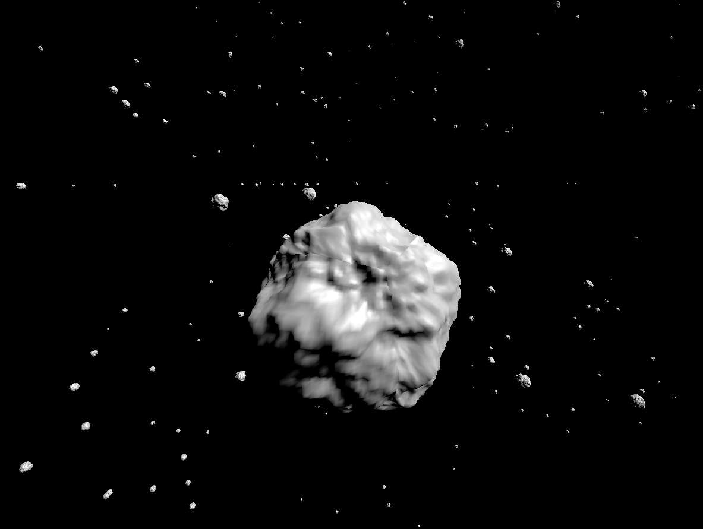

I made a procedural asteroid field generator in Godot 4.5!
But, how did I accomplish this?
Step 1 - The asteroids
The first thing I did was following a tutorial by Ombarus to make a procedural planet generator in Godot.
It was pretty cool, I was able to generate planets with a bunch of different parameters to play with. I quickly realised that I could also generate asteroids quite easily!
One of the first planets I procedurally generated after I managed to get it workingStep 2 - The asteroid field
I created an imaginary 3D grid, of which each position in the grid could be a potential asteroid location.
To determine where asteroids would be placed, I used a value noise generator built-in to Godot. Each position in the 3D grid that was above a certain threshold then generated a unique, random asteroid that adhered to a pre-determined range of parameters.

A close-up of one of the asteroids in the asteroid field. Note that the resolution of the asteroid is reduced so that a larger field can be generated.